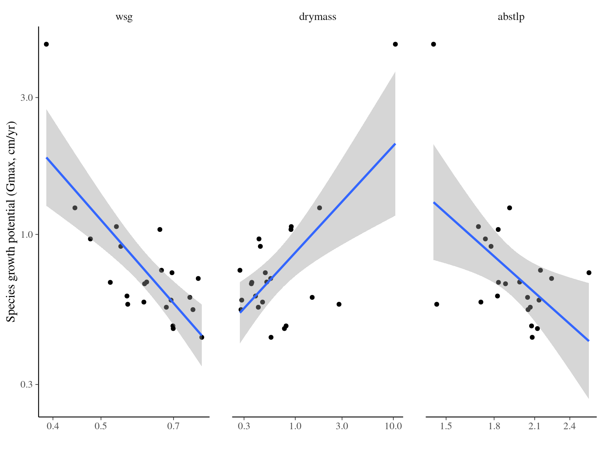
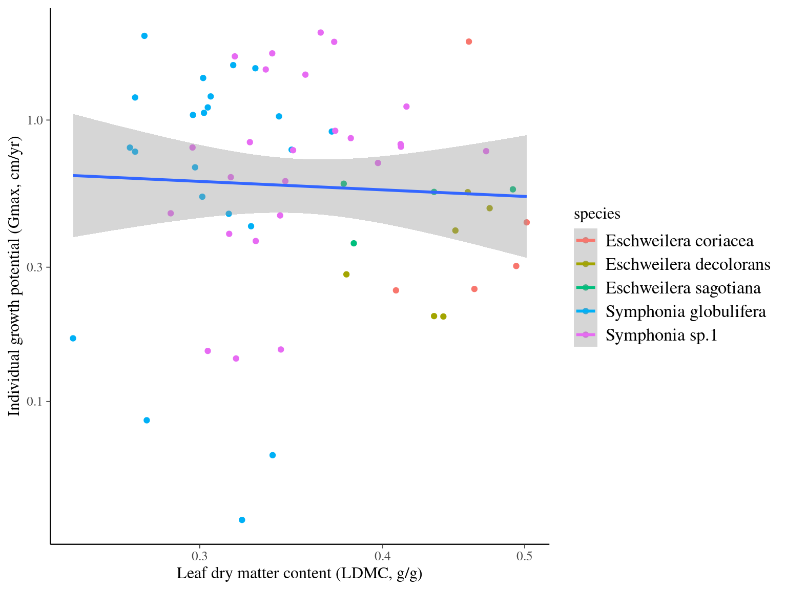
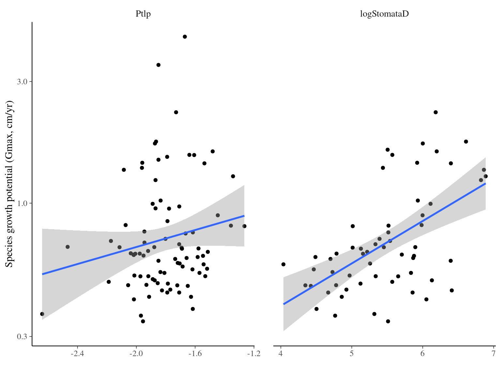

Chapter 6 Other analyses
In this chapter, I quickly investigated effects of functional traits and weather on individual growth.
Current results are using reduced data from chapter 3.
6.1 Methods
I used linear model for individual growth potential relation to functional traits at the individual or species level. For weather data, I used the yearly difference between observed diameter and predicted diameter as an index of individual and species annual growth success. I used linear mixed model to test weather variables effects on this variation of diameter (\(\Delta DBH\)). For each dataset, I first used a step procedure to select explanatory variables before using linear, mixed or not, models with multiple variables. I then plotted the individual relations between response and explanatory variables.
6.2 Results
6.2.1 Bridge
As highlighted by Hérault et al. (2011), wood specific gravity is a strong driver of species growth potential (\(\beta=-2.55, p<0.001, R^2=0.554\)), with dense tree growing logically slower.
| log(gmax) | |||
|---|---|---|---|
| Predictors | Estimates | CI | p |
| (Intercept) | 0.85 | -0.32 – 2.03 | 0.145 |
| wsg | -2.55 | -3.72 – -1.37 | <0.001 |
| Nmass | 18.83 | -13.76 – 51.41 | 0.241 |
| Observations | 22 | ||
| R2 / R2 adjusted | 0.596 / 0.554 | ||

6.2.2 ParacouITV
Interestingly, leaf area seems to drive individual growth potential within species of Symphonia and Eschweilera genera (\(\beta=-0.22, p<0.046, R^2=0.058\)), but the signal is weak.
| log(gmax) | |||
|---|---|---|---|
| Predictors | Estimates | CI | p |
| (Intercept) | -0.28 | -1.52 – 0.96 | 0.659 |
| CC | 0.01 | -0.00 – 0.02 | 0.106 |
| LA [log] | -0.22 | -0.43 – -0.00 | 0.046 |
| Observations | 124 | ||
| R2 / R2 adjusted | 0.073 / 0.058 | ||

6.2.3 hydroParacou
Interestingly, turgor loss point (Ptlp) and stomatal density (stomateD) appear to influence species growth potential (Gmax) with a positive effect (\(\beta=0.12, p<0.011\) 0.53, p=0.011 & \(\beta=0.18, p<0.001\), \(R^2=0.0288\)). Species with more stomata lose their turgidity more quickly but grow faster.
| log(gmax) | |||
|---|---|---|---|
| Predictors | Estimates | CI | p |
| (Intercept) | -0.37 | -0.46 – -0.27 | <0.001 |
| Ptlp | 0.12 | 0.03 – 0.21 | 0.011 |
| CN | -0.04 | -0.14 – 0.07 | 0.482 |
| stomataD | 0.18 | 0.08 – 0.28 | <0.001 |
| Observations | 58 | ||
| R2 / R2 adjusted | 0.326 / 0.288 | ||

6.2.4 REW
The annual median extractable water content (REW, but not the number of days REW<4) has a small negative effect on the observed diameters compared to the expected (-0.54, p<0.001, R2m=0.003). In other words, more waterlogged soils would result in 0.5cm less annual growth than expected. But given the distribution of REW I think this is an artefact of \(\Delta DBH\) variance according to REW observations.
| Delta DBH | |||
|---|---|---|---|
| Predictors | Estimates | CI | p |
| (Intercept) | 0.52 | 0.43 – 0.62 | <0.001 |
| REW | -0.54 | -0.65 – -0.43 | <0.001 |
| Random Effects | |||
| σ2 | 0.35 | ||
| τ00 species | 0.07 | ||
| N species | 138 | ||
| Observations | 25360 | ||
| Marginal R2 / Conditional R2 | 0.003 / 0.166 | ||
6.2.5 Weather
For the other climate variables we have significant effects due to the large number of points but with standard effects between -0.03 and 0.02, which I think are artefacts
| Delta DBH | |||
|---|---|---|---|
| Predictors | Estimates | CI | p |
| (Intercept) | -0.03 | -0.07 – 0.00 | 0.066 |
| T55 | 0.01 | 0.00 – 0.01 | 0.024 |
| Hr55 | 0.02 | 0.01 – 0.02 | <0.001 |
| windspeed | -0.03 | -0.04 – -0.01 | <0.001 |
| rainfall | -0.02 | -0.03 – -0.01 | <0.001 |
| ETP | 0.01 | -0.00 – 0.02 | 0.168 |
| Random Effects | |||
| σ2 | 0.14 | ||
| τ00 species | 0.04 | ||
| N species | 138 | ||
| Observations | 11302 | ||
| Marginal R2 / Conditional R2 | 0.006 / 0.232 | ||
References
Hérault, B., Bachelot, B., Poorter, L., Rossi, V., Bongers, F., Chave, J., Paine, C.E.T., Wagner, F. & Baraloto, C. (2011). Functional traits shape ontogenetic growth trajectories of rain forest tree species. Journal of Ecology, 99, 1431–1440.